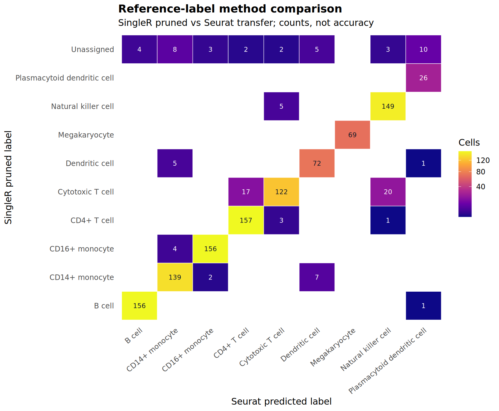
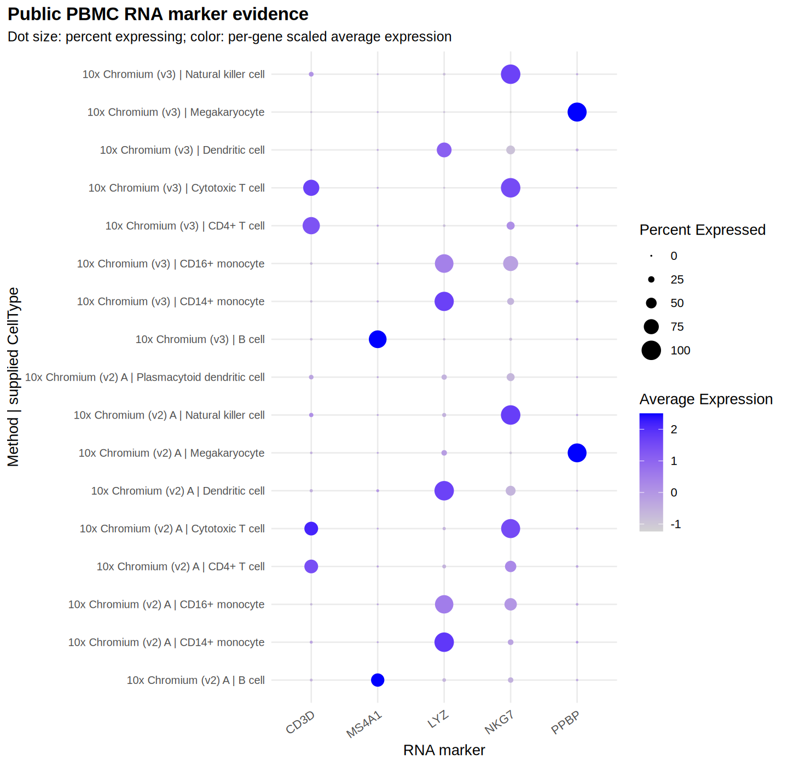

Choosing and Checking Cell-Type Annotation Methods
Nasir Mahmood Abbasi, PhD
Bioinformatics Educator
Worked example updated .

A cell-type label is a hypothesis, not a fact produced by a software call. In this worked example, you will run SingleR and Seurat label transfer on the same public PBMC query cells, inspect where their labels differ, and check the original RNA expression before accepting a conclusion.
Format: Hands-on lab. The public-data workflow was executed for this lesson. Download the scripts, inspect the saved results, and reproduce the analysis from a checksum-verified input package. Only SingleR and Seurat label transfer are executed here; the other methods below are a selection guide, not additional tested results.
1. Use a real query and a separate reference
The input is pbmcsca.SeuratData 3.0.0, the public PBMC systematic-comparison dataset distributed by SeuratData. The underlying study is Ding et al., Systematic comparison of single-cell and single-nucleus RNA-sequencing methods. This lesson creates new teaching results from that public input; it does not reproduce a private research cohort or claim to reproduce the study's full benchmark.
Two genuine assay groups form the query: 10x Chromium (v2) A and 10x Chromium (v3). The reference is a third group, 10x Chromium (v2) B. The workflow asserts that reference and query cell IDs are disjoint, then gives both annotation methods the same reference labels. A different assay group is not a held-out donor study: shared study design, reference-label biases, and shared expression-derived annotations remain important limitations.
| Source Method | Role | Source cells | Eligible cells | Selected |
|---|---|---|---|---|
| 10x Chromium (v2) A | Query | 3222 | 2992 | 590 |
| 10x Chromium (v2) B | Reference | 3222 | 3011 | 537 |
| 10x Chromium (v3) | Query | 3222 | 2993 | 559 |
The subset is fixed before either method is scored: retain cells with more than 200 detected genes and a usable supplied CellType, then select at most 80 cells per assay-group × source-label stratum using a recorded seed and stable cell ordering. Small strata are kept rather than padded. The downloadable selection table records exactly which public cells were retained. This is a compact, label-stratified teaching sample, not an estimate of natural blood-cell proportions; this simple input filter is not a complete biological QC or doublet-detection workflow.
The supplied source labels are annotations, not independent ground truth. They are used for reference training, subset construction and descriptive comparison. Agreement with them must therefore be described as source-label agreement, not accuracy. Novel or disease-associated states are outside this small public-PBMC demonstration.
2. Reproduce the analysis, not a placeholder
Download the complete worked-example bundle, including the executable R script, checksum-checking data preparer, Ubuntu setup instructions, recorded package versions and saved CSV results. You can also read the reproduction notes or full analysis script individually. The public input archive is fetched from its original provider rather than republished here.
Tested environment: R 4.3.3; Seurat / SeuratObject 5.0.1; SingleR 2.4.1; scuttle 1.12.0; scran 1.30.2; Harmony 1.2.3; LISI 1.0; ggplot2 3.4.4. Harmony 1.2.3 is deliberately pinned: the current Harmony2 release is a different version and is not silently substituted. Use a separate R environment, follow README.md, and keep the original download separate from generated results. Download size, observed runtime and memory are documented with the saved run; allow additional time for package installation.
cd pbmc-methods-worked-example
# On Ubuntu 24.04, follow the setup instructions in README.md first.
python3 prepare_inputs.py --data-dir data
Rscript run_example.R \
--data-package data/pbmcsca.SeuratData_3.0.0.tar.gz \
--output reproduced-resultsThe same command also generates the paired integration example. A missing package, checksum mismatch, overlapping reference/query IDs, missing source labels, or misaligned prediction rows is a reason to stop, not to guess a replacement. The script refuses to overwrite a nonempty output directory unless explicitly requested.
What the two methods actually do
| Method | Input and operation | Uncertainty to inspect |
|---|---|---|
| SingleR | Normalized query/reference RNA expression; reference labels supplied to SingleR(). | Original label, pruned label and delta.next. A pruned call is retained as unassigned. |
| Seurat label transfer | Reference/query anchors from FindTransferAnchors(), then categorical TransferData(). | predicted.id and prediction.score.max. Scores are method-specific, not clinical probabilities. |
The script rebuilds clean RNA objects from counts rather than reusing inherited reductions. It normalizes the reference and query, records selected features and dimensions, and aligns every prediction by the original cell ID before joining metadata. Name a method by the algorithm that generated its labels, not by the package or atlas that supplied a reference.
3. Read the observed outputs
Saved run: 1,149 query cells and 537 reference cells. Pruned SingleR and Seurat differ for 103 cells (9.0%); 37 of those are SingleR abstentions and 66 are competing named labels. These are descriptive results from this particular subset and environment, not a ranking of annotation algorithms.
| Output | Matching source labels | Fraction of all query cells | Unassigned |
|---|---|---|---|
| SingleR original | 1,061 / 1,149 | 92.3% | 0 |
| SingleR pruned | 1,031 / 1,149 | 89.7% | 37 |
| Seurat transfer | 1,078 / 1,149 | 93.8% | 0 |
SingleR pruning leaves 37 cells unassigned rather than forcing a named call. The table keeps all query cells in each denominator, including those abstentions. Seurat transfers a named label to every query cell in this run; that is not evidence that its calls are more trustworthy. A score or delta has meaning within its own method and is not a calibrated probability or a fair cross-method confidence scale.


Both methods were trained on the same source-label vocabulary, which makes this comparison easier to interpret than an exact-string comparison between incompatible ontologies. Even here, two identical labels can share a reference error. In a new atlas, explicitly map label granularity before counting disagreements; “T cell” versus “CD4 memory T cell” need not be a contradiction.
4. Investigate a disagreement with expression evidence
Start with the per-cell annotation table. Keep the SingleR original/pruned labels, Seurat label, both uncertainty fields, the source label and the assay-group identity together. The saved table is keyed by cell ID, so a disagreement cannot be created merely by joining rows in a different order.
A real disagreement: cytotoxic T cell or NK cell?
The largest competing named-label pair contains 20 cells: SingleR calls them Cytotoxic T cell, while Seurat calls them Natural killer cell. 16 come from v3 and 4 from v2 A. Their supplied source labels are also mixed: 10 Cytotoxic T cell, 9 Natural killer cell, 1 CD4+ T cell. Those annotations are not an independent arbiter.
| Gene | Cells with expression > 0 | Mean normalized log expression |
|---|---|---|
| CD3D | 17 / 20 | 1.729 |
| NKG7 | 20 / 20 | 3.991 |
NKG7 is shared by cytotoxic T and NK programs, so its detection alone cannot choose between them. CD3D detection supports a T-lineage hypothesis for many of these cells, but dropout, ambient RNA and doublets must still be considered. Inspect additional discriminating markers such as TRAC/CD3E and KLRD1/GNLY in the original RNA before making a manual call; those additional genes are suggested checks, not measured results shown in this five-gene panel. These are review candidates, not cells automatically ready to relabel.
- Select a cell group where the methods differ, or a low-confidence group if all calls agree. Count how many cells are involved and check whether one assay group dominates.
- Compare candidate labels at the same biological resolution. Preserve unassigned/pruned calls instead of forcing them into the nearest named class.
- Inspect original normalized RNA for discriminating markers. Here,
CD3D,MS4A1,LYZ,NKG7andPPBPprovide a small PBMC review panel where those genes are present. - Write down the evidence for each candidate and the uncertainty that remains. A missing transcript can reflect dropout or depth; one detected marker does not establish a full phenotype.


The marker plot is an expression-derived cross-check, not orthogonal validation. Reference labels and marker patterns may have been derived from related expression evidence. Protein measurements, independent expert review, or other independent assays are needed for stronger validation claims. Leave an unresolved call unresolved when the evidence cannot distinguish alternatives.
Practice with the saved results
Choose one disputed source-label group. Report the number of cells, each method's labels and uncertainty, and one marker observation supporting or weakening each interpretation. Then state what additional evidence would resolve the call. Do not write “method A is more accurate” unless you have a suitable independent truth set and evaluation design.
5. Choose alternatives without overstating this test
| Approach | Useful when | Required check |
|---|---|---|
| SingleR with a celldex atlas | A tissue- and species-appropriate reference is available. | Record atlas/version, feature IDs, label granularity and platform fit. HPCA is not the reference used in this run. |
| Azimuth / scmap | A suitable mapping reference or cluster index exists. | Check reference coverage, preprocessing, projection uncertainty and unassigned states. |
| scCATCH / Garnett | Curated tissue-specific markers or explicit marker rules are defensible. | Check supported marker data, organism/tissue, gene-ID conversion and unknown outputs. |
| CellAssign | Raw counts and a justified binary marker matrix are available. | For matrix input use cells × genes; marker rows must match count gene columns. Review size factors, covariates and posterior uncertainty. |
AI-generated annotation suggestions are not part of the tested workflow. Do not send patient-derived data or marker summaries to an external service without the necessary permissions and a data-handling review. Automated annotation is not a clinical diagnosis, and individual cells are not independent donor replicates for population-level inference.
Sources and next steps
- Ding et al. (2020), original comparative study; SeuratData distribution and documentation. Input provenance, package-declared license and complete checksums are in the bundle.
- SingleR vignette; Seurat FindTransferAnchors and TransferData.
- scmap vignette; scCATCH tutorial; Garnett documentation; CellAssign input reference.
- Continue with integration assessment on the same public query cells or revisit QC decisions before interpretation.